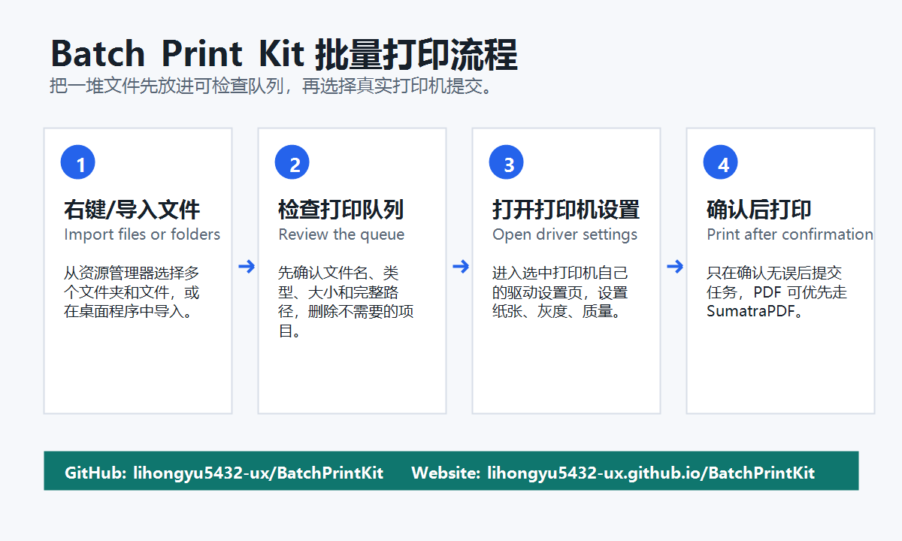

先检查队列，再批量打印。
Batch Print Kit 是一个开源 Windows 批量打印工具。它可以把多个文件和文件夹放进可检查的打印队列，选择真实打印机，打开打印机驱动设置，并优先用 SumatraPDF 处理 PDF。

适合这些场景
办公室资料
批量打印 PDF、Word、Excel、图片和资料文件夹。
仓库/门店
打印订单、标签、表格前先检查队列，减少误打。
学校/培训
把资料包集中到队列里，确认后一次提交。

安装
普通用户下载 Release 压缩包，解压后运行 BatchPrintKit.exe。
Scoop 用户可以这样安装：
scoop bucket add lihongyu https://github.com/lihongyu5432-ux/scoop-bucket scoop install batch-print-kit